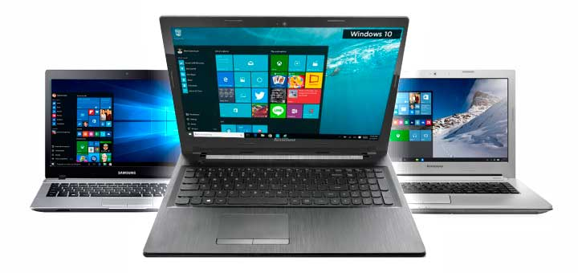

Notebooks e netbooks
 Visite a páginaPode parecer óbvio para quem é da área, mas quem não tem intimidade com informática pode se confundir hoje na hora de comprar um compuetador portátil. São denominações como netbook, notebook, PCs portáteis de pequenas dimensões e ainda outro termo: o nettop. Para acabar com a confusão, vamos explicar as sutis diferenças entre esses equipamentos. Notebook - O termo mais conhecido. São os computadores portáteis que estamos acostumados a ver desde 1995, quando ganharam esse nome. Tem telas entre 11,3 e 17 polegadas, com pesos que variam de 1,8 a 2,5 quilos. Há alguns modelos para games que chegam a pesar quase quatro quilos. Os processadores podem ter de um até quatro núcleos e muitos modelos possuem configuração de fazer inveja a desktops (computadores de mesa), como o Dell M15x, por exemplo. Netbook - São portáteis com configuração modesta. O processador roda tarefas do dia a dia (Pacote Office, acessa web via rede sem fio, cabeada e alguns modelos com chip 3G). A memória máxima é de 2 GB. Os discos chegam a 250 GB em alguns casos, mas o mais comum é 160 GB. Não há unidade gravadora de DVD e suas telas vão de sete a 10 polegadas (já existem modelos com 11 polegadas, mas não no Brasil). Seu peso não ultrapassa 1,4 quilo e, por consumirem menos energia, as baterias de alguns modelos chegam a durar até seis horas de trabalho ininterrupto.